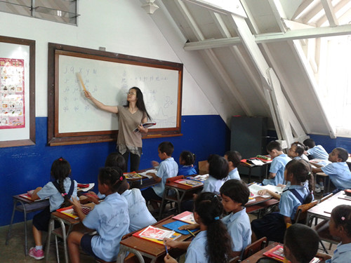

毛国前八周工作回顾
桂电志愿者网 日期：2013-05-16 来源：中国青年志愿者网
中国青年志愿者网讯（唐桂林） 到毛国两个多月，工作了三所学校。第一所De la salle和第二所Notre dame des victoires都是教会学校，两所学校的华人中文老师都非常的友好，在教学方面对我的帮助很大，从她们那里我学到了一些有用的克里奥尔课堂用语，以及当地教学注重书写读应试考试的特点。这两所教会学校的工作环境都很好，staff room里的设施都很齐全，因为教会组织有人赞助经济就很宽裕。
现在工作的第三所S.V.Ringadoo政府学校虽然是一所重点学校，由于没有教会方面经济的支持，各方面的硬件条件会稍逊一筹，像我这样在国内每天都要喝许多热水的老师，到了这儿也只得适应环境每天喝带去的凉开水了。同时，我也成为了该校唯一的中文老师，由于本学期前两个月之前换了两位老师，孩子们中间又有四周没有上中文了，教学进度极慢，期末临近，又赶上毛国的国庆日(独立日)，学校的一位校长要求孩子们用中文课时间画关于毛国的图画，写关于毛国的短文。用了三天的课堂时间完成了，结果另一位校长又说只需要六年级学生准备关于毛国的短文。感觉宝贵的中文课时间被浪费掉了，因为她们的教学进度本来就极慢，不过从教育的角度想一想，画画写短文的过程也是对学生进行爱国教育的过程，这样也就释怀了。???????无论在毛国工作的哪所学校，无论是华人还是当地人，无论是学生还是成人，他们都很友好，都会耐心的解答你的疑问，热情的提示你各种注意事项。

我喜欢这个国家，因为这里空气清新，天气宜人，更因为这里天真烂漫的孩子们和友好的毛国人！愿中国和毛里求斯两国友谊长存！
【责任编辑：严家芬】